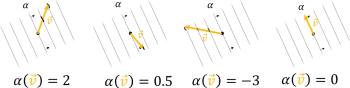

Linear Forms
One of the simplest types of linear transformations are those that send vectors to scalars.
Definition 7.1.1. Suppose V is a vector space over a field F. Then a linear transformation f : V → 𝔽 is called a linear form (also known as a linear functional, a one-form, or a covector).
f: V ⟶ 𝔽
f(v + w) = f(v) + f(w)
f(λv = λf(v)
Example 7.1.2. Show that the trace tr: Mn (𝔽) → 𝔽 is a linear form.
Solution: We already showed in Example 2.1.2 that the trace is a linear transformation. Since it outputs scalars, it is necessarily a linear form. ■
Note that the linear transformation T : ℝ2 → ℝ2 defined by T (x, y) = (x + 4y, 2x − 5y) for all (x, y) ∈ ℝ2, is not a linear form, as it does not output a scalar.
Example 7.1.3. Let C[a, b] be the vector space of continuous real-valued functions on the interval [a, b]. Show that the function I : C[a, b] → ℝ defined by
I(f) = ∫ba f(x) dx
is a linear form.
Solution. Recall that every continuous function is integrable, so this linear form makes sense. We just need to show that I is a linear transformation, since it is clear that its output is always a scalar. We thus check the two properties of Definition 7.1.1:
By properties of integrals that are typically covered in calculus courses, we know that for all f, g ∈ C[a, b] we have
I(f + g) = ∫ba (f+g)(x) dx = ∫ba f(x) dx + ∫ba g(x) dx = I(f)+I(g)
We similarly know that we can pull scalars in and out of integrals:
I(cf) = ∫ba (cf)(x) dx = c∫ba f(x) dx = cI(f)
∀f ∈ C[a,b] and c ∈ ℝ. ■
Example. (The row vectors are 1-forms). A covector is a linear transformation from the vector space to its field. If the vector space is finite, you can represent such a linear transformation as a matrix (in this case the matrix is a row vector). In finite dimensional vector space, linear transformations can be viewed as matrices, and that representation depends on the basis being used. If the basis is orthogonal, then the representation can easily be figured out by just 'flipping' the vector. With the multiplication of matrices, a row vector (linearly) associates a real to each column vector.
vT w ∈ ℝ
For example
Theorem 7.1.4. Let B be a basis of a finite-dimensional vector space V over a field F, and let f : V → F be a linear form. Then there exists a unique vector v ∈ V such that
f (w) = [v]TB [w]B for all w ∈ V,
where we are treating [v]B and [w]B as column vectors.
Proof. Since f is a linear transformation, Theorem 3.3.1 tells us that it has a standard matrix—a matrix A such that f (w) = A[w]B for all w ∈ V. Since f maps into F, which is 1-dimensional, the standard matrix A is 1 × n, where n = dim(V). It follows that A is a row vector, and since every vector in Fn is the coordinate vector of some vector in V, we can find some v ∈ V such that A = [v]TB, so that f(w) = [v]TB [w]B.
Uniqueness of v follows immediately from uniqueness of standard matrices and of coordinate vectors. □In the special case when F = ℝ or F = ℂ, it makes sense to talk about the dot product of the coordinate vectors [v]B and [w]B, and the above theorem can be rephrased as saying that there exists a unique vector v ∈ V such that f(w) = [v]B · [w]B for all w ∈ V.
In the case F = ℂ then [v]B · [w]B = [v]*B · [w]B, so we have to absorb a complex conjugate into the vector v to make this reformulation work.The space of all linear forsm on V is called "algebraic dual" of V (denoted V*).
Dirac’s Bracket Notation
The scalar product ⟨φ|ψ⟩ is the same as the linear form ⟨φ| applied to the vector |ψ⟩.
If f is a linear function on V and f(v) is its value at v ∈ V, then one also writef(v) ≡ ⟨f|v⟩ ≡ ⟨f̲|v⟩
Thus the underscore under f is a reminder that f̲ ∈ V∗, while v, or better v is an element of V. We say that f operates on the vector v and produces
⟨f|v⟩
A covector can thus be thought as an operator which acts on a vector and outputs a number.
Picture of a one-form
For vectors we usually imagine an arrow if we need a picture. It is helpful to have an image of a one-form as well. First of all, it is not an arrow. Its picture must reflect the fact that it maps vectors into real numbers. A vector itself does not automatically map another vector into a real number. When operating on a vector, by definition the 1-form counts the number of surfaces pierced by the vector.
When we multiply a covectors by a scalar, we change the number of surfaces that are pierced.

Doubling a covector double the number of surfaces it piercies. Instead, the ‘magnitude’ of a 1-form is given by the spacing between the surfaces: the larger the spacing the smaller the magnitude.
Example 7.1.3. The gradient of a function is a covector.
The derivative of a function in the direction of a tangent vector v is equalt to Dvf = (grad f)i vi, is independent of the local coordinates, and is a linear function on the tangent space.
The gradient enables us to justify our picture of a one-form. In Fig. 3.3 we have drawn part of a topographical map, showing contours of equal elevation.
If h is the elevation, then the gradient d̃h is clearly largest in an area, where the lines are closest together.
These pictures show why we in general cannot call a gradient a vector. We would like to identify the vector gradient as that vector pointing ‘up’ the slope, i.e. in such a way that it crosses the greatest number of contours per unit length. The key phrase is ‘per unit length’. If there is a metric, a measure of distance in the space, then a vector can be associated with a gradient. But the metric must intervene here in order to produce a vector. Geometrically, on its own, the gradient is a one-form. ■«Epoxides Index Dual Space»